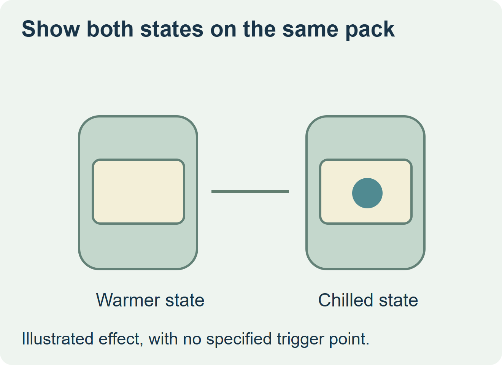
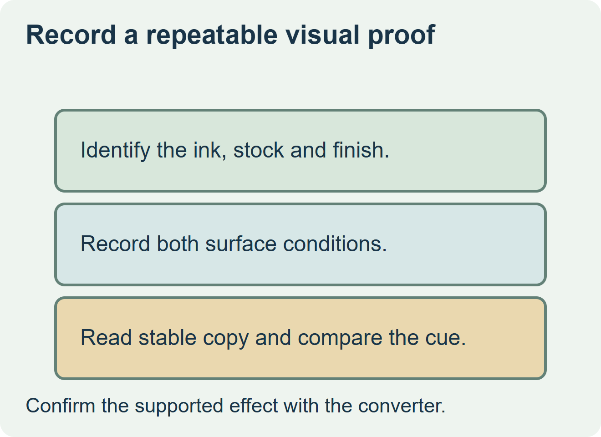

Approve a cold-reveal effect with a physical sample on the actual package. Ask the converter to show the intended appearance before chilling and at the agreed package surface condition. Choose a conventional printed design if the effect cannot be demonstrated reliably or if the text needs to be equally legible in every state.


Define the cue before choosing the ink
Ink maker Kuboi describes a reversible temperature-responsive ink and illustrates a beverage label application. Ask the converter whether its proposed effect returns to its original state as the package warms and which material, print stack and finish the trial represents. Keep the serving cue separate from any cold-chain history or product temperature verification. Kuboi’s reversible ink description
| What the buyer needs | Sample or specification | How to review it |
|---|---|---|
| A visible change at serving | Actual package and production-representative graphic | Observe the graphic and surface condition at the two agreed points. |
| A graphic that returns after warming | Proposed reversible construction | Check warm, cold and warm again under the agreed use route. |
| Required text throughout | A stable base print field separate from the changing area | Read it in both states, including the intended shelf or serving view. |


Keep the two states attached to one proof
Identify the sample, ink system, substrate, coverage and protective finish. Observe the same package at the agreed points, and record its surface temperature and visible moisture separately from the surrounding air. Take comparable pictures under the intended light. If the graphic is too subtle, compare a changed background or simpler artwork on a representative proof.
A hypothetical sparkling water brand could keep the product identity in stable print and reserve a small symbol for a chilled appearance. Ask the converter to confirm the construction and approval conditions before pricing the production quantity.
Discuss the unresolved label requirement
Send the container and finish, the two desired visual states, where the graphic should sit, the intended surface conditions and viewing environment, and quantities by SKU. Ask the converter which ink and finish it can represent in a proof. Review beverage label options and prepare a label specification inquiry. The contact page opens an email draft and lists email or WhatsApp for attachments. Supply, proof options, testing, pricing and timing require project confirmation.